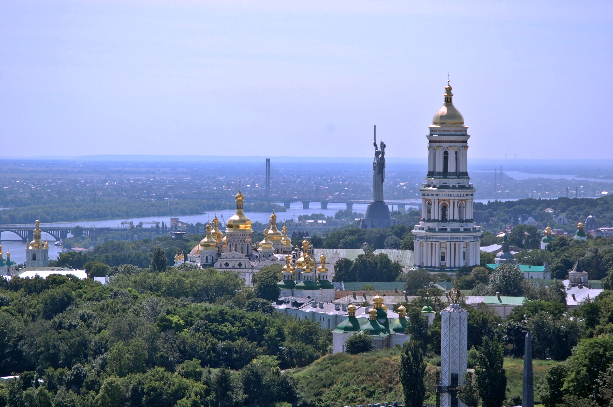

Коротка характеристика
Київ — одне з найстаріших міст Європи, розташоване на мальовничих берегах Дніпра.
Чому саме Київ?
Київ надихає своїм поєднанням стародавніх святинь, сучасних креативних просторів та великої кількості парків.
Цікаві факти
- Станція метро «Арсенальна» в Києві є найглибшою у світі.
- Вулиця Хрещатик — найкоротша центральна вулиця столиць у Європі (1,2 км).
Визначні місця
- Києво-Печерська лавра
- Софійський собор
- Андріївський узвіз
Особиста оцінка
Оцінка: 10/10 — місто невичерпної енергії та натхнення.
Додаткова інформація: Офіційний портал Києва